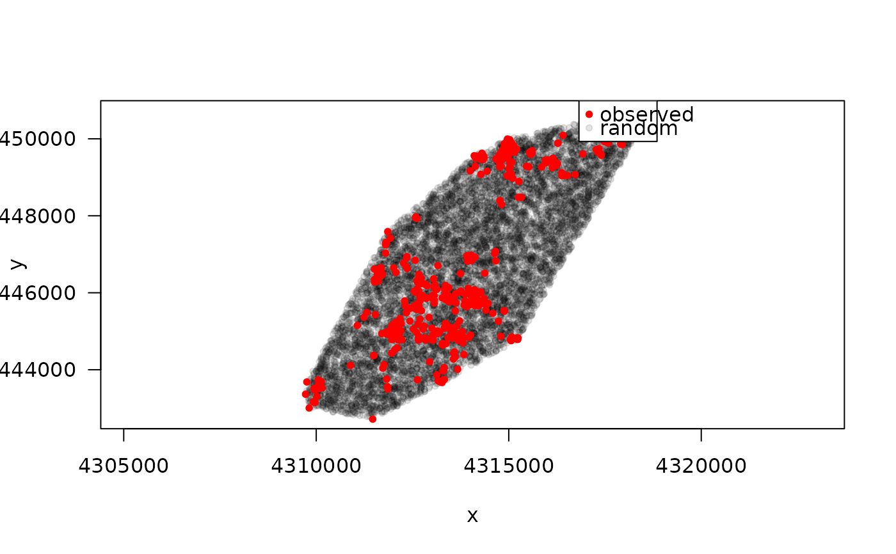
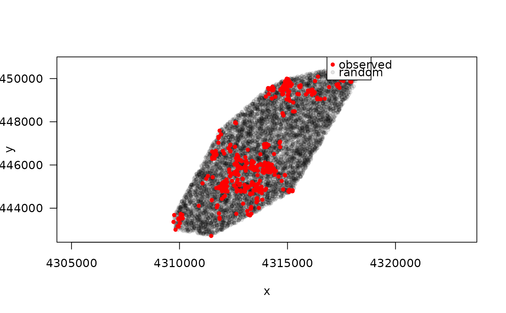
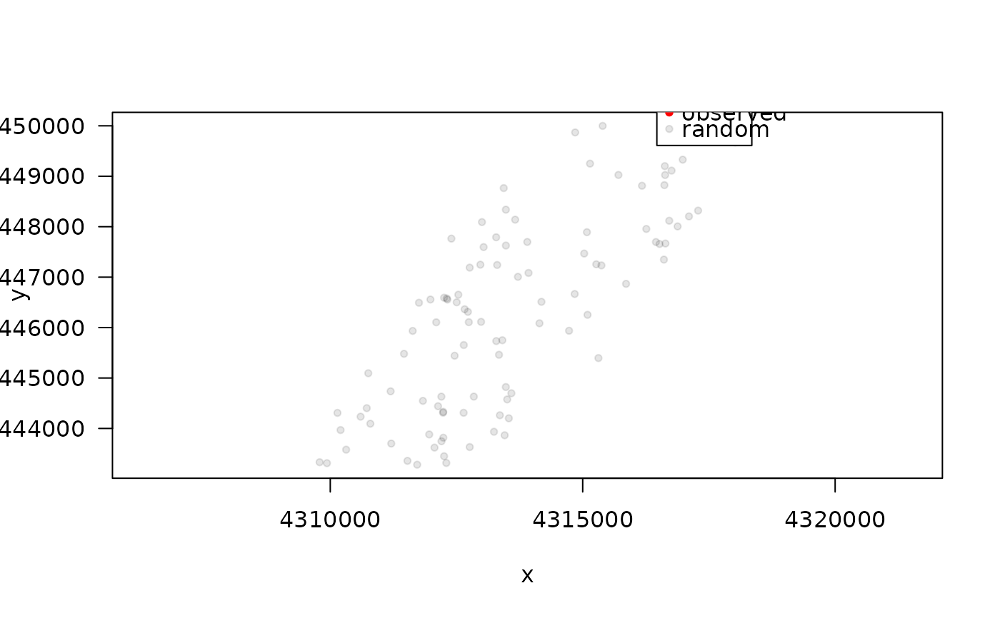

Functions to generate random points within an animals home range. This is usually the first step for investigating habitat selection via Resource Selection Functions (RSF).
random_points(x, ...)
# S3 method for class 'hr'
random_points(x, n = 100, type = "random", presence = NULL, ...)
# S3 method for class 'sf'
random_points(x, n = 100, type = "random", presence = NULL, ...)
# S3 method for class 'track_xy'
random_points(x, level = 1, hr = "mcp", n = nrow(x) * 10, type = "random", ...)[track_xy, track_xyt]
A track created with make_track.
[any]
None implemented.
[integer(1)]
The number of random points.
[character(1)]
Argument passed to sf::st_sample. The default is random.
[track]
The presence points, that will be added to the result.
[numeric(1)]
Home-range level of the minimum convex polygon, used for generating the background samples.
[character(1)]
The home range estimator to be used. Currently only MCP is implemented.
A tibble with the observed and random points and a new column case_ that indicates if a point is observed (case_ = TRUE) or random (case_ TRUE).
For objects of class track_xyt the timestamp (t_) is lost.
# \donttest{
data(deer)
# track_xyt ---------------------------------------------------------------
# Default settings
rp1 <- random_points(deer)
plot(rp1)

# Ten random points for each observed point
rp <- random_points(deer, n = nrow(deer) * 10)
plot(rp)

# Within a home range -----------------------------------------------------
hr <- hr_mcp(deer, level = 1)
# 100 random point within the home range
rp <- random_points(hr, n = 100)
plot(rp)

# 100 regular point within the home range
rp <- random_points(hr, n = 100, type = "regular")
plot(rp)
# 100 hexagonal point within the home range
rp <- random_points(hr, n = 100, type = "hexagonal")
plot(rp)
# }